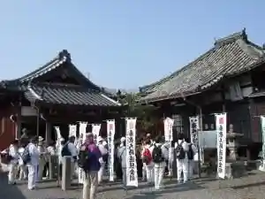
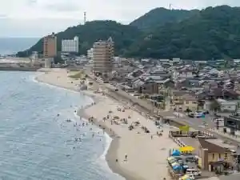

Tsubutega Ura
Minamichita, Aichi · 0569-62-3100 · Official / source link
Chita Shikoku Reijo
Minamichita, Aichi · 0569-62-0109 · Official / source link

Sankai Beach
Minamichita, Aichi · 0569-62-3100 · Official / source link

Morozaki Minato
Minamichita, Aichi · 0569-63-0009 · Official / source link
Morozaki Tsuri
Minamichita, Aichi · Official / source link
Bishu Kaisen Utsumi Fune Funanushi Uchida Ie
Minamichita, Aichi · 0569-65-2880 · Official / source link
Minamichita Kosumosu Kaido
Minamichita, Aichi · 0569-62-3100 · Official / source link
Taichi Misaki Kirakira Lookout (Shino Shima)
Minamichita, Aichi · 0569-67-3700 · Official / source link
Tanaka Farm Utsumi Furutsu Village
Minamichita, Aichi · 0569-62-2430 · Official / source link
Utsumi Mikan Kari Suzugatani Center
Minamichita, Aichi · 0569-62-1497 · Official / source link
Minamichita Ichigo Village
Minamichita, Aichi · 0569-62-1115 · Official / source link
Toyohama Sakana Hiroba
Minamichita, Aichi · 0569-65-0483 · Official / source link
Minamichita Guriimbarei
Minamichita, Aichi · 0569-62-3939 · Official / source link
Utsumi Beach
Minamichita, Aichi · 070-6550-5075 · Official / source link
Shino Shima Tsuri Tengoku
Minamichita, Aichi · 0569-67-3780 · Official / source link
Jinmei Shrine
Minamichita, Aichi · 0569-67-3700 · Official / source link
Shima no Eki SHINOJIMA
Minamichita, Aichi · 0569-67-3700 · Official / source link
Minamichita Onsen Sato
Minamichita, Aichi · 0569-62-3100 · Official / source link
Tourist Farm Hana Hiroba
Minamichita, Aichi · 0569-65-2432 · Official / source link
Hazu Misaki
Minamichita, Aichi · 0569-62-3100 · Official / source link
Nichikan Ga Shima
Minamichita, Aichi · 0569-68-2388 · Official / source link
Shino Shima
Minamichita, Aichi · 0569-67-3700 · Official / source link